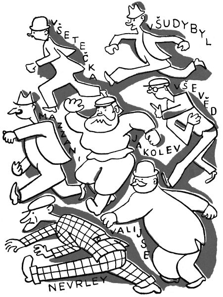

Jak detektývové kouzelníka honili
Když už si povídáme o tom, co všechno kočka dovede, musíme vypravovat ještě něco. Princezna kdesi cosi slyšela, že když číča padá z výšky, spadne vždycky na nohy a nic si přitom neudělá. I sebrala jednou Jůru, vylezla s ní na půdu, a aby to zkusila, pustila milou Jůru okýnkem dolů z náramné výšky. Honem pak vykoukla, spadla-li její micka opravdu na nohy; ale Jůra nespadla na nohy, protože spadla na hlavu jednomu pánovi, který šel zrovna dole po ulici. Snad mu Jůra v tom pádu nějak zaťala drápky do hlavy, nebo co se mu na tom jinak nelíbilo – zkrátka nenechal si kočku sedět na hlavě, jak snad si princezna myslila, že by měl udělat, nýbrž sundal ji, vstrčil ji pod kabát a rychlým krokem zmizel.
Plačky mračky běžela princezna z půdy a rovnou k panu králi. „Bů, bůů,“ plakala, „šel dole pán a ukradl nám Jůů-Jůůru!“
Slyšel to král a lekl se. Kočka sem, kočka tam, myslel si, ale tahle kočka má k nám přivést příštího krále. Tu bych, myslel si, přece jen nerad ztratil.
Honem si dal zavolat policejního prezidenta. „Tak a tak,“ povídá mu, „někdo nám ukradl černou kočku Jůru. Nesl ji pod kabátem a šel prý tudy tam pryč.“
Policejní prezident svraštil obočí, přemýšlel půl hodiny a pak řekl: „Pane králi, já tu kočku najdu, s pomocí pánaboha, policie veřejné i tajné, všeho vojska, dělostřelectva, loďstva, hasičstva, lodí podmořských i vzducholodí, věštců, kartářek a všeho ostatního obyvatelstva.“
Hned dal prezident svolat své nejlepší detektývy. Detektýv, děti, to je pán, který je ve službách tajné policie a je oblečen jako každý jiný člověk, jenomže je vždycky za něco přestrojen, aby ho nikdo nepoznal. A detektýv na všechno přijde, všechno nalezne, každého dohoní, všechno dovede a nebojí se ničeho. Jak vidíte, není to tak lehké, býti detektývem.
Hned tedy svolal prezident své nejlepší detektývy. Byli to tři bratři, Všetečka, Všudybyl a Vševěd; dále lstivý Ital Signor Mazzani, veselý tlustý Holanďan Mynheer Valijse, slovanský obr báťuška Jakolev a zasmušilý, nemluvný Skot Mister Nevrley. Pět slov, a už věděli, oč jde; a kdo prý toho zloděje chytí, dostane velikou odměnu.
„Si,“ zvolal Mazzani.
„Jaa,“ řekl vesele Valijse.
„Mm,“ zamručel Jakolev.
„Well,“ dodal Nevrley stručně.
Všetečka, Všudybyl a Vševěd na sebe prostě mrkli.
Za čtvrt hodiny zvěděl Všetečka, že pán s černou kočkou pod kabátem šel Spálenou ulicí.
Za půl hodiny přinesl Všudybyl, že pán s černou kočkou pod kabátem zahnul nahoru na Vinohrady.
Za hodinu přihnal se Vševěd, že pán s černou kočkou pod kabátem sedí ve strašnické hospodě u sklenice piva.
Mazzani, Valijse, Jakolev a Nevrley vskočili do připraveného automobilu a hnali se letem do Strašnic.
„Hoši,“ řekl Mazzani, když tam dojeli, „zločince tak prohnaného se musíme zmocnit lstí. Nechte mne jednat.“ Přitom, chytrák, myslel jen na to, aby slíbenou odměnu dostal sám.
Převlékl se tedy rychle za provazníka, který prodává provazy, a pustil se do hostince. Vidí tam sedět cizince v černých šatech, černovlasého, černovousého, bledých tváří a překrásných, třebaže tesklivých očí. To je on, pochopil detektýv ihned.
„Pane siňore kavaljéro,“ začal na něj švadronit lámanou češtinou, „prodávám provazy, krásné, pevné provazy, nejsou k přetržení, nejsou k rozvázání, provazy jako ze železa.“ Přitom ukazoval své provazy, všelijak je rozkládal, natahoval, roztahoval, rozvíjel, přehazoval z ruky do ruky, ale přitom mu oči jen jen jely po tom, aby honem hodil kličku z provazů cizinci na ruce, zadrhl rychle a svázal.
„Nepotřebuji,“ řekl cizinec a něco si psal prstem na stole.
„Jen se podívejte, pane,“ drmolil Mazzani ještě horlivěji a přehazoval, natahoval, rozvíjel provazy ještě rychleji, „jen se podívejte, jak jsou dlouhé, jak jsou pevné, jak jsou tenké, jak jsou silné, jak jsou bílé, jak jsou dobré, jak jsou – jak jsou – Diavolo,“ vykřikl najednou úzkostí, „co to je?“ Jak ty provazy přehazoval a roztahoval, rozkládal a převracel, začaly se mu tak nějak divně do nich zaplétat ruce; a provazy se mu samy od sebe zadrhovaly, zakličkovaly, zaplétaly, zauzlovaly, svazovaly, stahovaly, a najednou (koukal jako blázen) má jimi sám ruce nadobro a pevně spoutány.
Mazzani se až zapotil úzkostí, ale myslel si, že se ještě vyplete. Začal sebou kroutit a svíjet, házet a zmítat, skákal, shýbal se a točil se, aby se nějak z těch provazů vymotal, a přitom mlel pořád rychleji: „Podívejte se, podívejte se, jaká to je práce, jaká síla, jaká pevnost, jaká tuhost, jaká délka, jaká pružnost, jaká krása, jaké, panebože, provazy!“ A jak se tak kroutil a skákal, pořád pevněji a rychleji se kolem něho provazy otáčely a zavíjely, zadrhovaly a utahovaly, až bez dechu, spoután na rukou a na nohou, křížem krážem převázán a sešněrován, svalil se Signor Mazzani na zem.
Cizinec seděl, ani brvou nepohnul, ani smutné oči nezvedl, jen jako by si prstem něco kreslil na stole.
Zatím už detektývům venku bylo divné, že se Mazzani nevrací. „Mm,“ zvolal Jakolev odhodlaně a hnal se do hospody. Kouká – Mazzani leží svázán na zemi a za stolem cizinec, s hlavou svěšenou, si něco kreslí prstem na ubruse.
„Mm,“ zabručel obr Jakolev.
„Co tím,“ ptal se cizinec, „chcete říci?“
„Že vás zatýkám,“ řekl Jakolev drsně.
Cizinec jenom pozvedl své čarokrásné oči.
Jakolev už napřahoval svou ohromnou pěst, ale před těma očima se mu dělalo nějak nevolno. I zastrčil obě ruce do kapes a povídá: „Já, tento, abyste šel raději dobrovolně. Koho já chytnu, tomu nezůstane celá kostička v těle.“

„Tak,“ řekl cizinec.
„Baže,“ pokračoval detektýv. „A komu poklepám na rameno, ten už je navěky chromý. Mně říkají Silný Jakolev.“
„Milý báťuško,“ povídá cizinec, „to je sic pěkné, ale síla není všechno. A když se mnou mluvíte, mohl byste laskavě vytáhnout své ploutve z kapsy.“
Jakolev se trochu zastyděl a hned chtěl vytáhnout ruce z kapes. Ale co to? Nemůže a nemůže je dostat ven. Zkouší to s pravou – drží v kapse jako přirostlá. Zkouší to s levou – jako by ji centy v kapse držely. A i kdyby to centy byly, vytáhl by je, ale ruku z kapsy vytáhnout nemůže a nemůže, ať tahá a trhá a škubá sebevíc.
„To jsou špatné žerty,“ mručel Jakolev bezmocně.
„Ani ne tak špatné, jak si myslíte,“ řekl cizinec tiše a kreslil si dál prstem po stole.
Zatímco Jakolev se namáhal a potil a svíjel, aby dostal ruce z kapes, bylo detektývům venku divné, že se nevrací. „Půjdu tam,“ řekl Valijse krátce, a jak byl široký, valil se do hospody. Kouká – Mazzani leží spoután na zemi, Jakolev s rukama v kapsách tancuje po sednici jako medvěd a za stolem cizinec, s hlavou svěšenou, si čmárá prstem po stole.
„Jdete mne zatknout?“ ozval se cizinec, dříve než Valijse mohl něco říci.
„K službám,“ zvolal ochotně Valijse a vytáhl z kapsy železná pouta. „Račte jen, vašnosti, ručičky nastavit; dáme na ně pouta, prosím, hezká chladná pouta, docela nová poutečka, vašnosti, z nejjemnější ocele, s krásným pancéřovým řetízkem, všechno nejlepší jakosti.“ Přitom žertovný Valijse řinčel pouty a přehazoval je z ruky do ruky, jako by zboží ukazoval. „Račte si vybrat,“ mlel vesele dál, „nikoho nenutíme, jen tak trochu toho, kdo sám nechce; velejemné brazolety, vašnosti, s patentním zámkem, dobře přiléhající, nikde netlačí a nikde neškrtí,“ – tu počal Valijse rudnout a potit se a přehazovat pouta rychleji a rychleji z ruky do ruky – „překrásná pou-pouta, dělaná zrovna pro pána, au, jemine, jemine! z dělové oce-oce-ocele, pane, tužená v oh-oh-oh-oh jemine! v ohni, v nejžha-ha-haha-au nejžhavější vý-výýý-výíííhni a – saakra!“ zařval náhle Valijse a praštil pouty o zem. Jak by, chudák, nepraštil! a jak by je v rukou nepřehazoval! vždyť pouta byla do běla rozžhavena, a sotva dopadla na zem, propálila podlahu, div ji plamenem nezapálila.
Zatím se venku Nevrley už divil, že se nikdo nevrací. „Well,“ zvolal odhodlaně, vytáhl revolver a vnikl do hospody. Kouká – všude plno čoudu, Valijse skáče bolestí po sednici a fouká si do dlaní, Jakolev se svíjí s rukama v kapsách, Mazzani leží spoután na zemi a za stolem cizinec, s hlavou svěšenou, si čmárá něco na ubruse.
„Well,“ pronesl Nevrley a šel s revolverem rovnou na cizince. Cizinec zvedl na něho svůj sladký, zamyšlený pohled. Nevrley pocítil, že se mu zatřásla ruka před těma očima, ale přemohl se a vypálil z největší blízkosti cizinci všech šest ran z revolveru do čela mezi oči.
„Jste už hotov?“ tázal se cizinec.
„Ještě ne,“ odtušil Nevrley, vytáhl druhý revolver a vypálil dalších šest ran cizinci do čela.
„Hotovo?“ zeptal se cizinec.
„Ano,“ řekl Nevrley, otočil se na patě a založiv ruce sedl si v koutě na lavici.
„Tedy zaplatím,“ zvolal cizinec a zacinkal šestákem o sklenici. Nikdo z domácích lidí nepřišel. Všichni se schovali strachem na půdě, když slyšeli střelbu. I nechal cizinec šesták na stole, pozdravil detektývy a klidně odešel.
V téže chvíli se objevila v jednom okně hlava Všetečkova, v druhém Všudybylova a ve třetím Vševědova. První skočil Všetečka oknem do světnice. „Hoši,“ povídá, „kde ho máte?“ A dal se do smíchu.
Druhým oknem skočil Všudybyl. „Mně se zdá,“ smál se, „že Mazzani tuhle válí se po zemi.“
Třetím oknem skočil Vševěd. „A mně,“ povídá, „že Valijse je teď nějak nevrlej.“
„Já myslím,“ přidal polínko Všetečka, „že Nevrley teď nekouká jako lev.“
„A já zas,“ dopověděl Všudybyl, „že Jakolev není zrovna mazaný.“
Mazzani si sedl na podlaze. „Hoši,“ bránil se, „to není jen tak. Mne ten zloděj spoutal a přitom na mne prstem nesáhl.“
„A mně,“ mručel Jakolev, „přimrazil ruce do kapes.“
„A mně,“ naříkal Valijse, „rozžhavil pouta v rukou.“
„Well,“ dodal Nevrley, „to všechno nic není. Ale já jsem mu vpálil dvanáct kulí do čela, a nezůstalo po nich ani škrábnutí.“
Všetečka, Všudybyl a Vševěd se na sebe podívali.
„Mně se zdá,“ začal Všetečka.
„– že ten zloděj –,“ pokračoval Všudybyl.
„– je vlastně kouzelník,“ dokončil Vševěd.
„Ale co, hoši,“ řekl zase Všetečka, „v pasti ho máme. My jsme s sebou přivedli tisíc vojáků –“
„– a dali jsme obklíčit tuhle hospodu,“ pokračoval Všudybyl.
„– že ani myš odtud neuteče,“ dodal Vševěd.
V tom okamžiku zazněla venku rána z tisíce pušek, jako by hrom udeřil.
„Už je po něm,“ zvolali všichni detektývové jako jedněmi ústy.
Rozlétly se dveře a do sednice skočil velitel těch vojáků. „Poslušně hlásím,“ spustil, „že jsme hospodu obklíčili. Dal jsem rozkaz, že ani myš nesmí z hospody ven. A tu vám, hoši, vylítla ze dveří bílá holubička s něžnýma očima a kroužila mně kolem hlavy.“
„Ach,“ zvolali všichni; jen Nevrley řekl: „Well.“
„Rozsekl jsem šavlí tu holubičku,“ pokračoval velitel, „a zároveň všech tisíc vojáků do ní střelilo. Holubička se rozletěla na tisíc kousků, ale z každého kousku se vám udělal bílý motýl a třepetal se pryč. Poslušně hlásím, co teď.“
Všetečka zajiskřil očima. „Dobrá,“ rozkázal, „povoláte všechno vojsko, zálohy i domobranu, a pošlete je po všech zemích, aby pochytali ty motýly.“
To se také stalo, a můžeme říci předem, že z toho pak povstala tuze pěkná sbírka motýlů, kterou ještě dnes ukazují v Zemském muzeu. Kdo je v Praze, musí se na ni jít podívat.
Zatím však řekl Všudybyl těm ostatním: „Hoši, vy tu teď nejste nic platni, my už se nějak uradíme i bez vás.“
I šli smutně a s prázdnýma rukama zpátky: Mazzani, Valijse, Nevrley, Jakolev.
Dlouho se radili Všetečka, Všudybyl a Vševěd, jak na kouzelníka. Při tom vykouřili cent tabáku, snědli a vypili všechno, co bylo ve Strašnicích k dostání, ale na nic nepřišli. Konečně řekl Vševěd: „Kluci, takhle to nepůjde. Musíme se trochu provětrat.“
Šli tedy ven, a sotva přišli před hospodu, koho tam nevidí než sama kouzelníka. Seděl tam a díval se náramně zvědavě, co budou dělat.
„Tady je,“ vykřikl Všetečka radostně a jedním skokem chytil kouzelníka za rameno. Ale v ten ráz se kouzelník změnil v stříbrolesklého hada, a Všetečka jím leknutím praštil o zem.
Byl tu hned Všudybyl a hodil na toho hada svůj kabát. Ale z hada se udělala zlatá muška a vyklouzla knoflíkovou dírkou na boží vzduch.
Vyskočil Vševěd a chytil tu zlatou mouchu do čepice. Ale z mouchy se udělal stříbrný potůček a běžel, běžel pryč i s čepicí.
Skočili všichni do hospody pro sklenice, aby chytili potůček do sklenic. Ale už jim stříbrný potůček uběhl a vtekl do Vltavy. Proto je i dnes Vltava, když je v dobré náladě, tak krásně stříbrná: to vzpomíná na kouzelníka, šumí zamyšlená a třpytí se, že se člověku až hlava zatočí.
Ale zatím stáli Všudybyl, Vševěd a Všetečka na břehu Vltavy a přemýšleli co teď. Tu vystrčila z vody hlavu stříbrná ryba a dívala se na ně zářnýma černýma očima, vpravdě očima kouzelníkovýma. I koupili si všichni tři detektývové rybářské pruty a začali chytat ve Vltavě ryby. Ještě dnes je tam můžete vidět, jak po celé dny sedí s prutem na loďkách, chytají ryby a nemluví ani slova, a nedojdou klidu, dokud nechytí stříbrnou černookou rybu.
Ještě mnoho jiných detektývů hledělo chytit kouzelníka, ale marně. Stávalo se jim, když uháněli automobilem, aby ho chytli, že najednou vystrčila srna hlavu z mlází a dívala se na ně černýma, něžnýma, zvědavýma očima; a když letěli aeroplánem, letěl za nimi orel a nespouštěl z nich své pyšné, planoucí oči; a když pluli lodí, vyšvihl se z moře delfín a upíral na ně svůj rozumný, pokojný pohled; a i když seděli ve svých pracovnách a přemýšleli, stávalo se, že květiny na stole začaly zářit a hleděly na ně zvědavě a sličně, nebo že jejich policejní pes zvedl náhle hlavu a obrátil k nim oči tak lidské a krásné, jakých jindy nemíval. Odevšad, zdálo se jim, hledí na ně kouzelník, hledí a zase zaniká: jak by ho pak mohli chytit?